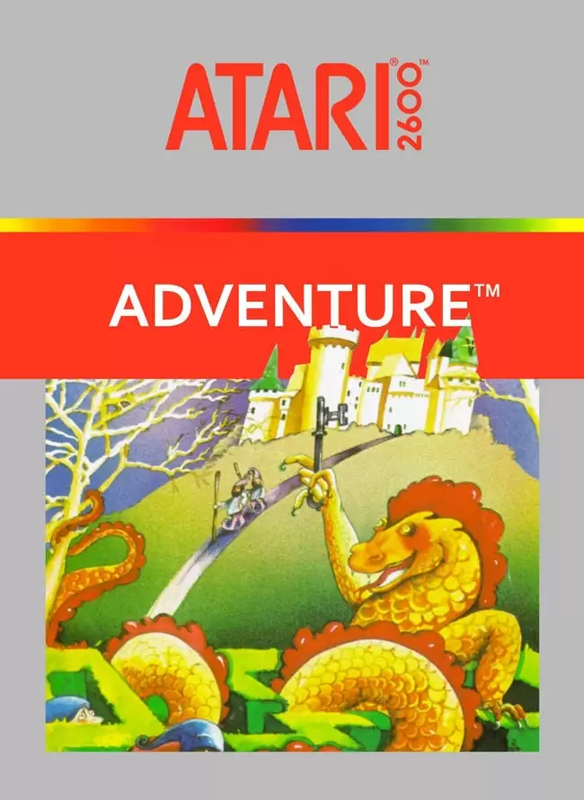

Bem-vindo ao 8-Bit Community
Aqui você encontra analises, eater eggs, lores e debates sobre games retro. O intuito da pagína é criar uma comunidade para conversar sobre esses temas entre os diversos jogos retrô.
Oque acha de dar uma olhada nos novos conteúdos adicionados?
